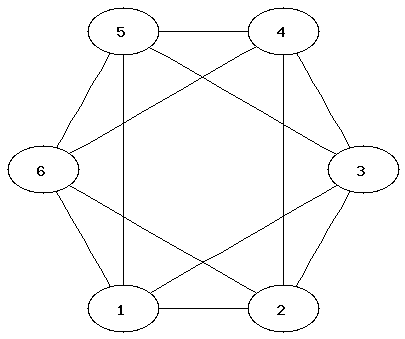
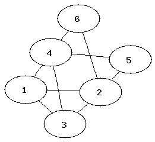
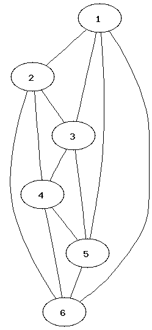
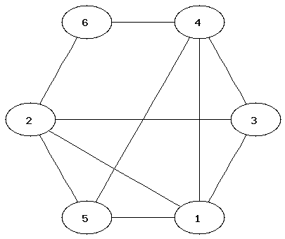
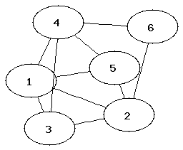
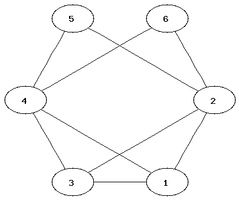

import networkx
import subprocess
from subprocess import Popen, PIPE
from networkx.utils import _get_fh
def write_gif(G, path, prgr="dot"):
"""
Write the graph G in gif format using Graphviz
"""
pathgif = path + ".gif"
pathdot = path + ".dot"
fh=_get_fh(pathdot,mode='w')
count=iter(range(G.number_of_nodes()))
node_id={}
if G.is_directed():
fh.write("digraph G{node [ ];\n")
else :
fh.write("graph G{node [ ];\n")
for n in G:
nid=G.node[n].get('id',count.next())
node_id[n]=nid
fh.write("%s ["%nid)
fh.write("label = \"%s\"];\n"%n)
for u,v,edgedata in G.edges_iter(data=True):
if G.is_directed():
fh.write("%s ->"%node_id[u])
else:
fh.write("%s --"%node_id[u])
fh.write("%s\n"%node_id[v])
fh.write("}\n")
cmd = prgr + ' -Tgif -o ' + pathgif + ' ' + pathdot
pipe = Popen(cmd, shell=True, stdin=PIPE).stdin
| 1:  | 2:  | 3:  |
| 4:  | 5:  | 6:  |
It can be easier to determine that two graphs are not isomorphic than to show that they are. Which property of the nodes can be used to determine that two graphs are not isomorphic?
from networkx import * from write_gif import *Commands for creating a graph and adding nodes and edges:
G=Graph() ### initialises a new graph
G.add_node("One")
G.add_nodes_from(["Hello","World"]) ### adding a list of nodes
G.add_edge("Hello","World")
G.add_edges_from([("One","Hello"),("One","World")])
H= DiGraph(G) ### creates a directed graph using G
Commands for displaying nodes and edges:
G.nodes() G.edges()Removing edges:
G.clear()
write_gif(G,"filename")Instead of filename you should type a name of a file (without extension). After executing the command, two files, filename.gif and filename.dot (which can be ignored), will appear in the current directory. You can view the gif file via your I:-drive.
The software that creates the layouts is called Graphviz. These layout options are available:
| write_gif(G,"filename") | hierarchical layout |
| write_gif(G,"filename","neato") | spring model layout |
| write_gif(G,"filename","fdp") | another spring model layout |
| write_gif(G,"filename","twopi") | radial layout |
| write_gif(G,"filename","circo") | circular layout |
This website has more information about Graphviz and the different types of layouts.
(Here is more information on how to use Graphviz with NetworkX.)
4) NetworkX provides many standard graphs. Try different layouts for these:
G1=house_x_graph()
G2=complete_bipartite_graph(3,5)
G3=lollipop_graph(10,20)
Where did you see the House Graph in the lecture?
6) Determine the chromatic number of the graphs. (The chromatic number is the minimum number of colours needed to colour a graph so that neighbouring nodes have different colours.)
7) Which of the graphs have a Hamiltonian or Eulerian path?